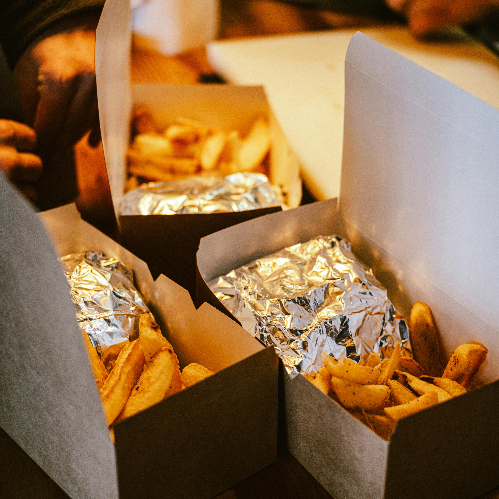

Baked French Fries

Description
These baked French fries are crispy on the outside and tender on the inside. They're a healthier alternative to traditional fried fries and are perfect as a side dish or snack.
Ingredients
- 4 large potatoes
- 2 tablespoons olive oil
- 1 teaspoon salt
- 1/2 teaspoon black pepper
- 1/2 teaspoon paprika (optional)
Steps
- Preheat the oven to 425°F (220°C).
- Wash and peel the potatoes, then cut them into thin strips.
- In a large bowl, toss the potato strips with olive oil, salt, pepper, and paprika until evenly coated.
- Spread the fries in a single layer on a baking sheet lined with parchment paper.
- Bake for 25-30 minutes, flipping halfway through, until the fries are golden and crispy.
Go back to main page